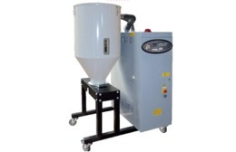
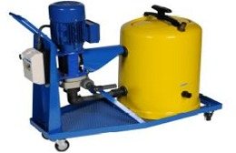
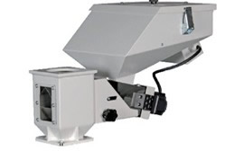
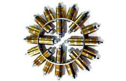
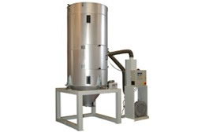

Maquinaria auxiliar para el sector industrial de la transformación de termoplásticos.
Alimentadores
Alimentadores neumáticos monofásicos y trifásicos modelos MA y MAT
Depósito fabricado en acero inoxidable. Circuito electrónico. Control del tiempo de aspiración. Control del sistema de limpieza filtro. Alarma falta de material. Pausa entre tiempos de aspiración (*). Motor con by pass para su refrigeración (**). Filtro fabricado en poliéster anti-estático.
Atemperadores
Modelos para agua (90°C) o aceite (150-300°C). Amplia de gama de potencias de calefacción (3…30KW). Control electrónico PID de la temperatura en refrigeración y calefacción. Interface de comunicaciones 4-20mA, RS 485. Bomba, posibilidad de trabajar en presión y depresión. Detección rotura mangueras de proceso. Control rotura de termopar. Depósito y resistencias fabricados en acero inoxidable. Sistema de refrigeración indirecto. Sensor de nivel magnético. Carga automática de agua. Ruedas.
Caudalímetros
Los reguladores de caudal de agua permiten hacer un control preciso e individual en cada una de las zonas.
Tubo de poliamida 12 (estándar).
Cuerpos de PA 6 con 30% de fibra de vídrio.
Grifos de regulación fabricados en latón.
Termómetro (estándar).
Juntas tóricas en contacto con el agua fabricadas en EPDM.
Insertos de latón en el cuerpo inferior.
Deshumidificadores

Solución perfecta para la deshumidificación de los termoplásticos hidroscópicos. Programación diaria / semanal. Microprocesador electrónico con control PID. Bombas de vacío de alta presión. Tolvas de proceso fabricadas en acero inoxidable con aislante térmico. Protecciones en el proceso como : - Fallo en el circuito del aire, fallo por exceso de temperatura. - Fallo en la posición de la distribución del aire etc. Alta superficie filtrante en las bombas de vacío
Diseño compacto. Punto de rocio -50ºC
Desincrustadores

Para la limpieza y manutención de máquinas, moldes, calandras etc.
Fabricado y diseñado para trabajar con ácidos por ese motivo aseguramos una larga vida al equipo.
Capacidad depósito: 30 l.
Potencia bomba: 0.37 kw.
Caudal bomba: 3000 l/h.
Voltaje: 230-400 / 3 / 50 hz.
Dosificadores

Capacidad de dosificación que va desde 0,07 a 60 kg/h. Control de la dosificación mediante microprocesador compacto que se suministra con el equipo. Motor tipo Brushless. Los materiales que están en contacto con el material están fabricados en acero inoxidable. El husillo de dosificación está inclinado para obtener una mejor dosificación. Trampilla para facilitar la limpieza y los cambios de color. Tolva preparada para instalar el alimentador MA-2.
Mezcladores
Los Mezcladores serie " V " y "MVP" son equipos capaces de efectuar mezclas entre materiales vírgenes con recuperados, materiales vírgenes con aditivos y finalmente materiales vírgenes con polvo.
El modelo V 01 es el único que se fabrica en acero inoxidable.
La mezcla se efectúa mediante un sinfín.
Los Mezcladores serie V estan provistos de ruedas para facilitar su transporte.
La facilidad de limpieza y descarga de material es muy sencilla en estos equipos.
Todos los modelos están preparados para trabajar con alimentadores.
Filtros magnéticos

Apropiados para la separación de pequeñas partículas de hierro o donde las partículas a separar están en una materia muy viscosa. Por ello, están especialmente adaptados para las industrias de plástico y alimentación.
Su revestimiento es de latón o como opción puede fabricarse en inoxidable pulido (AISI304 o AISI316) lo que permite asegurar un alto grado de resistencia a la corrosión y el desgaste.
Secadores

Los secadores se utilizan en el procesamiento de materiales plásticos en gránulos hidroscópicos, que retienen la humedad en su superficie lo que puede afectar la calidad final del producto final.
4 modelos: EST, MD, MHS y MMH. Tolva de acero inoxidable. Tolvas con aislamiento de fibra cerámica. Tolva con tapa preparada para alimentadores. Tolva con puerta de inspección ( del modelo TRDI250en adelante).
Controlador PID electrónico de temperatura con display. Relés de estado sólido en series MD, MHS y MMH
Temperatura de doble punto de conexión para la alarma. La temperatura estándar de seguridad para SH-MH
Visualización de alarmas. Derivación del sistema de recirculación de aire de retorno.